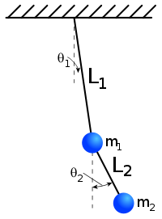

Wizualizacja wahadła podwójnego |
Oś x: $\theta_1$ / Oś y: $\theta_2$ |
Zmiana kąta $\theta_1$ w czasie |
|
Zmiana kąta $\theta_2$ w czasie |
|
Równania ruchu dla wahadła podwójnego
$\ddot{\theta_1} = \frac{-g (2m_1 + m_2)\sin{\theta_1} - m_2 g \sin(\theta_1 - 2 \theta_2) - 2 \sin(\theta_1 - \theta_2) m_2 (\dot{\theta}_2^2 L_2 + \dot{\theta}_1^2 L_1 \cos(\theta_1 - \theta_2))}{L_1 (2m_1 + m_2 - m_2 \cos(2 \theta_1 - 2 \theta_2))}$
$\ddot{\theta_2} = \frac{2 \sin(\theta_1 - \theta_2) (\dot{\theta}_1^2 L_1 (m_1 + m_2) + g (m_1 + m_2) \cos{\theta_1} + \dot{\theta}_2^2 L_2 m_2 \cos(\theta_1 - \theta_2))}{L_2 (2m_1 + m_2 - m_2 \cos(2 \theta_1 - 2 \theta_2))}$
